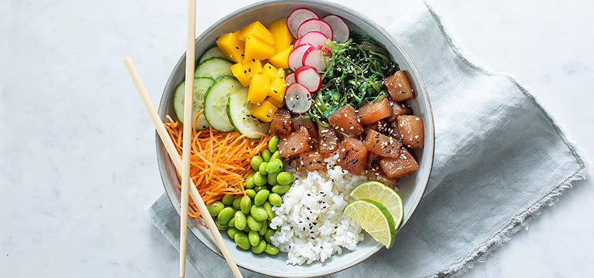

Pokebowl

Description
Salmon poke bowls are easy to make in your own home! Buy your favorite toppings and enjoy a totally custom poke bowl for cheaper than buying it at a restaurant.
Ingredients
- 4 cups cooked rice
- 4 tablespoons soy sauce
- 4 teaspoons rice vinegar
- 4 teaspoons sesame oil
- 1/4 teaspoon chile oil (Optional)
- 3/4 pound sashimi-grade salmon, cut into small cubes
Steps
- Divide rice among 4 bowls
- Mix soy sauce, rice vinegar, sesame oil, and chile oil in a bowl to make dressing. Mix salmon with the dressing. Divide among the 4 bowls.
- Top bowls with avocado, red bell pepper, edamame, seaweed, pickled ginger, and furikake seasoning. Garnish with chopped green onion a sprinkling of sesame seeds.